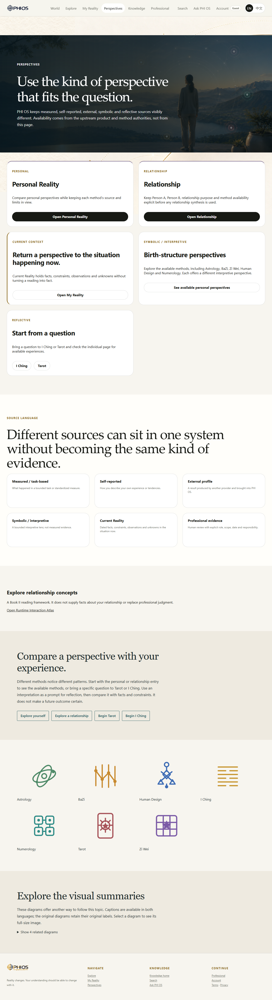
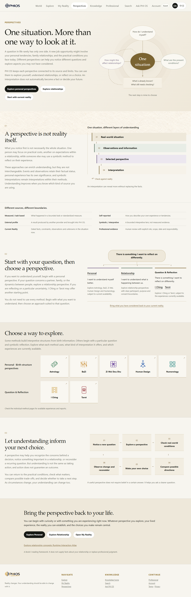
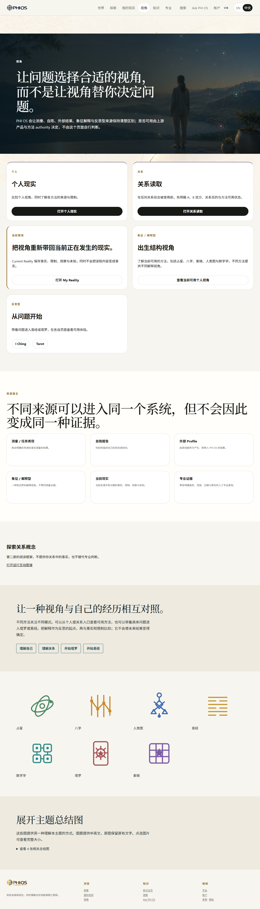
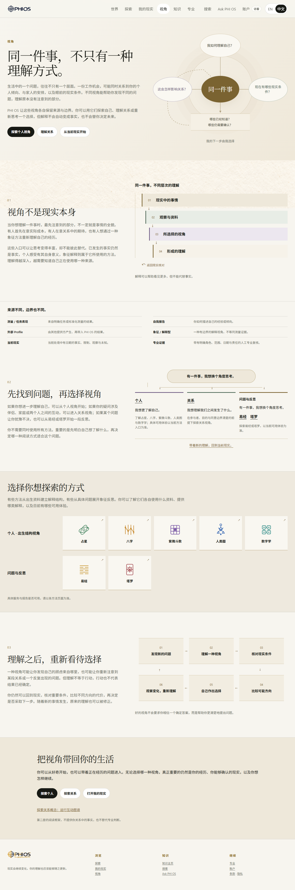
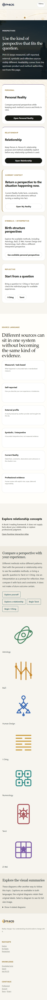
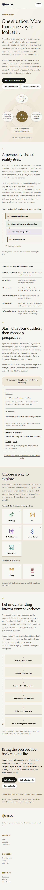
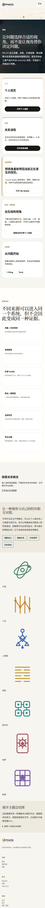
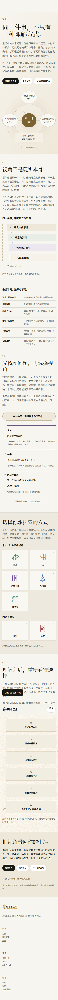
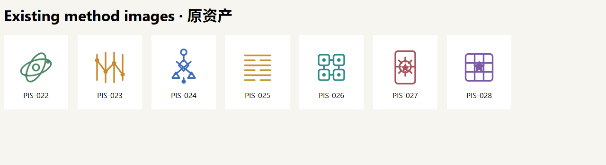

PERSPECTIVES-VISUAL-R1 · HUMAN_ACCEPTED
最终构图与接线 · 人工审阅
一个专用 Hero，三张有节点、方向或回路的结构图；七张原方法 SVG 图标按个人与反思分组。页面完整双语文案来自本轮附件。请审核语义、视觉、方法身份和实际入口；机器 PASS 不等于 Human ACCEPT。
DEPLOYED / LIVE_CUSTOMER：RUNTIME_UNVERIFIED。本代理零 R2 删除、零 provider 调用、零生产部署、零 commit/push。其他窗口推进了提交；没有回滚。
完整新版页面预览
以下是本次完整源码快照，仅供本地 review；真实页面的全局 CSP 与方法权限保持不变。
四组原版 / 新版对照
1280px · en


1280px · zh-Hans


390px · en


390px · zh-Hans


另有 1440 与 375px 中英文全页截图，见下方 QA 表。
Hero 与三张结构图实际画面
Hero · 同一件事，三种问题与事实核对
Diagram 01 · 现实、资料、视角、理解及返回核对
Diagram 02 · 一项问题，独立入口与现实返回
Diagram 03 · 自主选择、观察变化与重新理解
七张方法图身份与复用

- PIS-022 · PHIOS-ICON-METHOD-ASTROLOGY-v1.svg → /perspectives/personal/#perspective-astrology；真实字节 503，接受摘要一致；原图复用，身份图标不代表客户命盘或报告已开放。
- PIS-023 · PHIOS-ICON-METHOD-BAZI-v1.svg → /perspectives/personal/#perspective-bazi；真实字节 527，接受摘要一致；原图复用，身份图标不代表客户命盘或报告已开放。
- PIS-024 · PHIOS-ICON-METHOD-HUMAN-DESIGN-v1.svg → /perspectives/personal/#perspective-human-design；真实字节 431，接受摘要一致；原图复用，身份图标不代表客户命盘或报告已开放。
- PIS-025 · PHIOS-ICON-METHOD-I-CHING-v1.svg → /perspectives/iching/；真实字节 296，接受摘要一致；原图复用，身份图标不代表客户命盘或报告已开放。
- PIS-026 · PHIOS-ICON-METHOD-NUMEROLOGY-v1.svg → /perspectives/personal/#perspective-numerology；真实字节 723，接受摘要一致；原图复用，身份图标不代表客户命盘或报告已开放。
- PIS-027 · PHIOS-ICON-METHOD-TAROT-v1.svg → /perspectives/tarot/；真实字节 466，接受摘要一致；原图复用，身份图标不代表客户命盘或报告已开放。
- PIS-028 · PHIOS-ICON-METHOD-ZIWEI-v1.svg → /perspectives/personal/#perspective-ziwei；真实字节 423，接受摘要一致；原图复用，身份图标不代表客户命盘或报告已开放。
五种个人方法定位到现有方法介绍节点；易经、塔罗保留现有独立入口。服务与报告可用性由相应页面及原有检查决定，不从旧台账提升完成状态。
旧图下架与 Hero 决策
FIG-022、FIG-023、FIG-024、FIG-026 及 PIS CONTEXT FIGURES 标题、说明、展开控件全部从本页移除。共享解析器和 Hero 机制保留；本代理没有删除任何 R2 对象。PIS-016 实图为通用 Personal Reality 山景人物背景，不能冒充新主题；本页 data-pis-hero 与旧 OG 图片引用已移除。
查看旧 PIS-016 实图
浏览器、语言与导航检查
| 宽度 | 语言 | 结果 | 坏图 | 横向溢出 px | 文字越界/节点重叠 | 证据 |
|---|---|---|---|---|---|---|
| 1440 | en | PASS | 0 | 0 | 0 | 全页截图 |
| 1440 | zh-Hans | PASS | 0 | 0 | 0 | 全页截图 |
| 1280 | en | PASS | 0 | 0 | 0 | 全页截图 |
| 1280 | zh-Hans | PASS | 0 | 0 | 0 | 全页截图 |
| 390 | en | PASS | 0 | 0 | 0 | 全页截图 |
| 390 | zh-Hans | PASS | 0 | 0 | 0 | 全页截图 |
| 375 | en | PASS | 0 | 0 | 0 | 全页截图 |
| 375 | zh-Hans | PASS | 0 | 0 | 0 | 全页截图 |


全部真实方法及保留入口共 10 个导航检查通过；BaZi 链接实际点击到对应方法节点。Runtime Atlas 为动态挂载，已在浏览器确认。语言按钮实际切换成功，HTML 图内文字随现有 locale owner 切换。使用真实 R2 字节和仓库 CSP；没有凭 HTTP200 或引用数量判定视觉验收。
首轮隐藏空图片占位及图外箭头伪元素的误报记录保留。最终只检测被请求的图片和实际文字 Range 边界。页面截图与四图单独截图已人工观察；桌面及手机无压线、重叠或裁切。Print media 保留结构图，不宣称整页 PDF 分页已接受。
修改与构建记录
perspectives/index.html
SHA2561559f92378d96b5774a0630931c1752bfb0c3840ef5505b4713ae5efd1697f0dperspectives/personal/index.html
SHA256041170044ce655579e2ff763ce7bbc8862e7ddf916cd900cd1c489c9eb0b6cb3assets/customer-ui/surfaces/perspectives-visual-r1.css
SHA25617dc1ca85ff62846eecfbc98743ae77995b0dee4fe3561ffa874db7fb203f82c
隔离编译 public-index-copy、shell 和本页 CSS 全部 exit 0；没有运行会清理共享 .pages-output 的整站构建。
Human 审核对象
- Hero 是否准确表达同一情境、个人/关系/现实条件与返回事实核对。
- 三图是否清楚区分来源与解释、呈现真实独立入口、保留非确定性的选择与反馈。
- 七种方法身份是否正确，分组和各自入口是否合适。
- 四组主要对照与 1440/375 补充截图的中文、英文和手机可读性。
已记录本轮明确 Human ACCEPT；接受范围为本次视觉与接线审阅，不代表部署、客户交付或付费产品完成。没有提交、推送或发布生产。